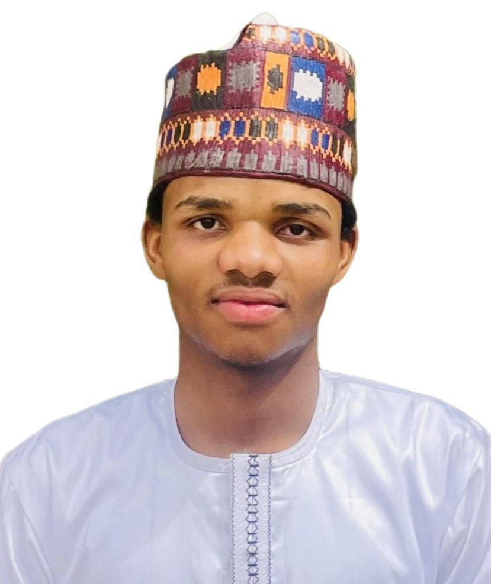

About muhammad shuaibu adam

As a 200 Level Computer Science student at Northwest University, Kano, my academic journey is fueled by a profound passion for technology and an innate drive to innovate. I am muhammad shuaibu adam, and my ultimate career goal is to become a successful entrepreneur, leveraging my technical skills to create impactful solutions and build scalable businesses.
My interest in Computer Science stems from its boundless potential to transform ideas into reality. I am constantly fascinated by how code can bring complex systems to life and how digital tools can empower individuals and communities. This curiosity has led me to actively seek out learning opportunities, both within my university curriculum and through self-study.
Academic Pursuits & Vision
Northwest University, Kano
B.Sc. Computer Science - 200 Level
Currently, I am immersed in the fundamental principles of computer science, covering areas such as programming paradigms, data structures, algorithms, and web technologies. My coursework is providing a strong theoretical foundation, which I actively complement with practical application through coding exercises and personal projects.
- Strong foundation in core CS concepts.
- Engaging with challenging assignments and group projects.
- Active participation in departmental events and seminars.
Entrepreneurial Drive
Innovator and Problem-Solver
My long-term aspiration is to build and lead a technology startup. I believe that true innovation lies in identifying critical problems and crafting elegant, efficient solutions. I am consistently exploring emerging technologies and market needs, laying the groundwork for future ventures. My entrepreneurial mindset influences my approach to learning, always seeking to understand the practical applications and business potential of every skill acquired.
- Passionate about identifying market gaps.
- Constantly brainstorming innovative product ideas.
- Committed to learning about business strategy and leadership.
Beyond the Code
While coding and academics form a significant part of my life, I firmly believe in a balanced approach. My hobbies, including playing and watching football, delving into cinematic storytelling, engaging in research, and dedicating time to reading, offer diverse perspectives and enhance my problem-solving abilities.
These activities not only provide relaxation but also foster creativity, critical thinking, and a broader understanding of the world – qualities I believe are essential for any successful entrepreneur and technologist. I am an advocate for lifelong learning, whether it's through a new programming language or a captivating book.
My Personal Ethos
- Adaptability: Thriving in dynamic environments and embracing new challenges.
- Collaboration: Believing in the power of teamwork to achieve greater outcomes.
- Integrity: Upholding honesty and strong ethical principles in all endeavors.
- Curiosity: A relentless desire to learn, explore, and understand.